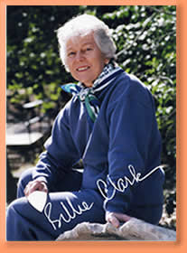

"The role of the artist is often to be on the cutting edge, to challenge the complacent and pique the establishment. And so it was with myself years ago. Now I am happy when I see a smile on the face of the viewer. If I can bring a bit of joy or delight to my audience, I am satisfied." Billie Clark
Billie Clark is an award-winning artist based in her hometown of Holland, Michigan, after having spent most of her adult life in Austin, Texas where she raised three children. She is a sculptor comfortable working in a wide variety of media, which can be seen in galleries and parks around the area and around the country. She enjoys working in clay for casting in bronze or aluminum, ceramics and pottery, and built-up cement. Her sculpture is primarily figurative.
She has been painting since high school. She credits her latest teacher, Gloria Dalvini, for her inspiration. Her watercolors are typically vibrant in color with loose, free brush strokes. Although she has painted scenery and protraits, she favors still lifes.
Billie attended Holland's Hope College and the School of the Museum of Fine Arts in Boston, Massachusetts, and graduated from the University of Texas at Austin with a Bachelor of Science in Studio Art.
She has shown primarily with the Texas Society of Sculptors in venues throughout the state. She is also an active member of the Holland Friends of Art, and has exhibited in several of their shows. She has also participated in Art Round Town in Saugatuck, Michigan in 2004.
Her sculptures are in several private homes and gardens, in Texas, Michigan, California and Hawaii. She also has public sculptures, including a life-size bronze figures at the Hope College campus in Holland Michigan, and at the Women's Pavilion in Fredericksburg, Texas. Three larger-than-life figures, built up in direct cement, can be seen at Emmaus Church at Lakeway near Austin. She is currently working on two life-size sculptures for the city of Holland that depict a Dutch woman and man in Volendam costume; the female has a basket of tulips and he holds a meerschaum pipe. These will be cast in bronze and dedicated in the spring of 2006.
Her affiliations include:
- Texas Society of Sculptors - Emeritus Member
- Past President
- Event Chairman
- Show Coordinator
- Secretary - Newsletter Editor
- Austin Sculpture Association
- Board Member
- Elisabet Ney Sculpture Conservatory
- Faculty
- Workshop Coordinator
- Austin Contemporary Visual Arts Association
- Founding Secretary
- El Paso Pro-Muisica
- Backstage with the Arts Representative
- El Paso Newcomers Club
- Clay and Pottery Class Organizer
- Holland Friends of Art
- Active Member